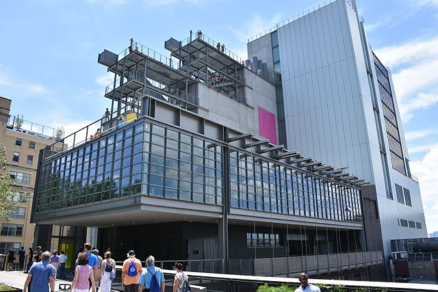

The High Line
Chelsea Piers
Need to find a place to play? Why not check out Chelsea Piers? This popular destination is ideal to learn, practice, play, or compete in over 25 different sports. Located on the scenic Hudson River, Chelsea Piers offers instructional programs and sports leagues for all ages as well as a health club and multiple event spaces.
Whitney Museum
The High Line is a must for any tourist visiting the Chelsea area! This 1.45-mile long, linear public park was built on a historic freight rail line elevated above the streets of Manhattan's West Side. It runs from Gansevoort Street to West 34th Street. Check out various overlooks, interesting plants, and public programs like art installions, shops, and more!
Looking for a bit of culture? Stop by the Whitney Museum of American Art. This museum represents the full range of twentieth-century and contemporary American Art, with a special focus on works by living artists. Designed by architect Renzo Piano, the Museum's new building between the High Line and the Hudson River allows for the most expansive view of its unsurpassed collection of modern and contemporary American art.